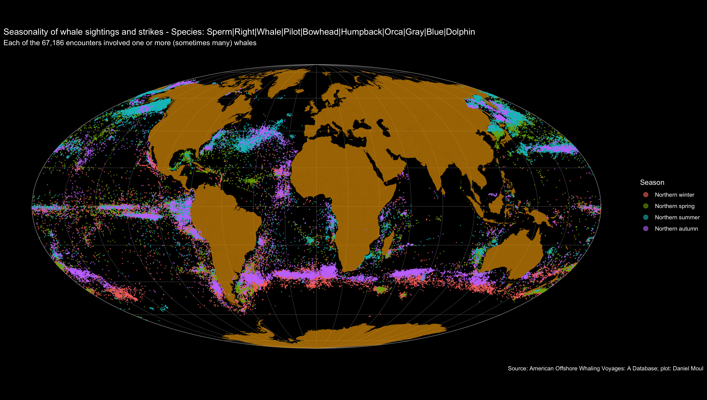

7 The whales
The generalizations in this chapter are very reliant on the assumption that the log data available for a subset of the voyages is representative of all voyages. See Figure 3.4 Logbook and voyages tables: Voyages starting each year; see also Section 11.1 Dealing with errors, duplicates, and omissions.
7.1 Most common species
Sperm and Right whales were the species most hunted. Starting in the 1850s Sperm whales became the most sought after and remained so through the decades of the American whaling movement. The number of Right whales sighted, struck, and tried plummeted in the 1850s and never recovered.
7.2 Less common species
Finback whales were not hunted much, and their period of most hunting in the time frame of this data set occurred in the peak decades of American whaling; as seen in Figure 7.19 consistently through the decades whaling crews declined to hunt Finbacks. The most Bowhead whales were hunted in the 1860s and 1870s.
7.3 Where and when encounters occurred
The plots below record where and in which years American whalers encountered whales (both sightings and strikes). This is not representative of where whales could be found at the time. Why? Consider the following:
- There are no recorded encounters near Europe and no tracks in the Norwegian, Greenland or Barents Seas. Why? Because Europeans, especially Norwegians, hunted whales there (Roed 2015). American whalers presumably sought less contested hunting grounds.
- Why are there horizontal bands of Sperm whale encounters in the Pacific west of Ecuador and the Galapagos at the equator and about 5° South: prevailing winds? Currents?
- There is a similar band at about 30° North southeast of Japan. Same question.
Considering the ranges of sperm and right whales shown in the the plots above, the it seems the encounters recording the species as “whale” were mostly right whales and a minority of sperm whales:

7.3.1 Encounters over the years
Animations by year reveal productive hunting areas being discovered and then exploited. Where there were no encounters in the later years, it’s likely the whales were fished out or it was not economical to pursue them in those places.
7.4 Seasonality
Northern (“Species Directory: Northern Right Whale” 2022-08-04) and Southern (“Species Directory: Southern Right Whale” 2022-08-04) Right and Finback (“Species Directory: Fin Whale” 2022-08-04) whales migrate with the season to reach feeding and calving grounds. Sperm whale movements are less understood: “Some populations appear to have different migration patterns by life history status, with adult males making long oceanographic migrations into temperate waters whereas females and young staying in tropical waters year-round.” (“Species Directory: Sperm Whale” 2022-08-04). Bowhead whales don’t migrate but do move north and south in Arctic waters as the edge of the pack ice grows and recedes.
Whalers learned where and when to find the species they sought. This seasonality is visible when coloring encounters by season. I used the following categories:
- Northern winter: December, January, and February
- Northern spring: March, April, and May
- Northern summer: June, July, and August
- Northern autumn: September, October, and November
Northern and Southern Right Whales are considered separate species, since they don’t mix.

And with all of the above species in one plot:

7.5 Effectiveness over time
Sightings did not pay the bills. Whalers sought strikes–and ones that resulted in tries. Did the percentage of strikes improve over time? Looking at the decades 1800-1900 one can see that after the 1840s whaling crews sighting sperm whales were more likely to strike, and when species could not be identified (logged as “Whale”), the crews were less likely to strike.
The huge finback whales were not pursued during the nineteenth century, because they were too fast and dangerous to the crews. In the twentieth century they were hunted to the point of being endangered, and the International Whaling Commission issued a moratorium on hunting them in 1971 (“Finback Whale” 2020).
Pilot and bowhead whales were typically struck when identified.
7.6 Species mix per decade - encounters
While sperm whales were always preferred, only after the 1880s were Sperm whales the majority of whales encountered. As one can see in Figure 7.2 the number of Sperm whale encounters were generally similar from the 1860s onward while the other species’ encounters collapsed, likely due to population collapse or species becoming unprofitable to hunt.
7.7 Decade mix per species - encounters
Some species were encountered mostly during a brief period of one to three decades (Right, Bowhead, Humpback); presumably these species were over-fished or their product wasn’t valuable enough to pursue.
7.8 Tries
How many whales were tried out on a whaling venture? In the data set the median whales tried per voyage was 28 in 1,072 voyages. A small minority of voyages (1.3%) recorded more than 100 whales tied.
Voyages with more than 100 tries:
| 15 voyages recorded at least 100 whales tried | ||
| voyage_id | voyage_name | n_tried |
|---|---|---|
| AV00455 | Alexander : 1821-1824 | 130 |
| AV09574 | Mercury : 1825-1827 | 119 |
| AV02143 | Cadmus : 1831-1834 | 114 |
| AV06817 | Howard : 1835-1838 | 127 |
| AV04049 | Edward Quesnel : 1836-1839 | 137 |
| AV10844 | Oliver Crocker : 1858-1863 | 121 |
| AV00141 | Abraham Barker : 1871-1875 | 196 |
| AV06022 | Greyhound : 1898-1902 | 144 |
| AV01799 | Bertha : 1905-1907 | 137 |
| AV06024 | Greyhound : 1903-1907 | 155 |
| AV01807 | Bertha D. Nickerson : 1906-1908 | 109 |
| AV01800 | Bertha : 1907-1909 | 102 |
| AV02324 | Canton II : 1907-1909 | 100 |
| AV00560 | Alice Knowles : 1910-1913 | 115 |
| AV02733 | Charles W. Morgan : 1911-1913 | 123 |
Table of voyages recording at least 100 tries
7.9 Tries per strike
As noted above, an encounter sometimes involved more than one whale. Strikes sometimes included multiple tries (harvests).
7.10 Species mix per decade - tries
The plot below shows the portion of tries for each species that occurred each decade. Harvensting right and sperm whales peaked in the 1840s, pilot and bowhead whales in the 1850s, and the other less common species in the 1860s and 1870s.
7.11 Whale species today
As with many other kinds natural resources, the common mentality in eighteen, nineteenth, and early twentieth centuries was that whales were there for the taking, and as one species became rare whalers moved on to others. The long shadow of commercial whaling is the near extinction of many whale species.
7.11.1 Right whales
As noted in the NOAA Fisheries Species Catalog (“Species Directory: Northern Right Whale” 2022-08-04) (“Species Directory: Southern Right Whale” 2022-08-04)
North Pacific right whales are one of the rarest of all large whale species and among the rarest of all marine mammal species. Two other species of right whale exist in the world’s oceans: the North Atlantic right whale, which is found in the North Atlantic Ocean, and the southern right whale, which is found in the southern hemisphere. North Pacific right whales are baleen whales, which feed by straining huge volumes of ocean water through their comb-like baleen plates that trap copepods and other zooplankton.
Commercial whaling greatly reduced right whale populations in the Pacific Ocean. Whaling is no longer a threat, but human activity such as entanglement in fishing gear and marine debris, vessel strikes, impacts from climate change, Oil and gas development, and ocean noise, continue to endanger this species.
There are no reliable estimates of current abundance or trends for right whales in the North Pacific. There are likely fewer than 500 North Pacific right whales remaining, and most sightings have been of single whales, though small groups have been sighted. Only about 30 individuals are estimated to remain of the Eastern stock that visits Alaskan waters.
7.11.2 Sperm whales
As noted in the NOAA Fisheries Species Catalog (“Species Directory: Sperm Whale” 2022-08-04)
Sperm whales are the largest of the toothed whales and have one of the widest global distributions of any marine mammal species. They are found in all deep oceans, from the equator to the edge of the pack ice in the Arctic and Antarctic.
They are named after the waxy substance—spermaceti—found in their heads. The spermaceti is an oil sac that helps the whales focus sound. Spermaceti was used in oil lamps, lubricants, and candles. Sperm whales were a primary target of the commercial whaling industry from 1800 to 1987, which nearly decimated all sperm whale populations. While whaling is no longer a major threat, sperm whale populations are still recovering. The sperm whale is listed as endangered under the Endangered Species Act and depleted under the Marine Mammal Protection Act… The International Whaling Commission placed a moratorium on commercial whaling in 1986. The species is still recovering, and its numbers are likely increasing.
7.11.3 Finback (fin) whales
As noted in the NOAA Fisheries Species Catalog (“Species Directory: Fin Whale” 2022-08-04)
The fin whale is the second-largest whale species on earth, second only to the blue whale. It is found throughout the world’s oceans. It gets its name from an easy-to-spot fin on its back, near its tail.
Like all large whales, fin whales were hunted by commercial whalers, which severely lowered their populations. Whalers did not target them at first, because they were fast swimmers and lived in open ocean habitats. But, as whaling methods modernized with steam-powered ships and explosive harpoons, and whalers decimated other easy-to-catch species, whaling turned to fin whales. This industry killed a huge number during the mid-1900s—nearly 725,000 in the Southern Hemisphere alone.
Whaling is no longer a threat for fin whales (commercial whaling ended in the 1970s and 1980s, though some subsistence hunting continues today in Greenland under sustainable quotas allowed by the International Whaling Commission). Currently, the major threat to this species comes from vessel strikes. The fin whale is listed as endangered under the Endangered Species Act and depleted under the Marine Mammal Protection Act.
7.11.4 Pilot whales
As noted in the NOAA Fisheries Species Catalog (“Species Directory: Pilot Whale” 2022-08-14)
Long-finned pilot whales are very social, living in large schools of hundreds of animals separated into close-knit pods of 10 to 20 individuals. This structure made them easy targets for whaling in the 19th and 20th centuries. Whalers would drive and herd pilot whales together into tight groups to harpoon them, hunting them for their meat, oil, and blubber.
Long-finned pilot whales are one of two species of pilot whale, along with short-finned pilot whales. In the field and at sea, it is very difficult to distinguish the two species, which differ only slightly in physical size, features, coloration, and pattern.
7.11.5 Bowhead whales
As noted in the NOAA Fisheries Species Catalog (“Species Directory: Bowhead Whale” 2022-08-14)
Bowhead whales are one of the few whale species that reside almost exclusively in Arctic and subarctic waters experiencing seasonal sea ice coverage, primarily between 60° and 75° north latitude. Of all large whales, the bowhead is the most adapted to life in icy water. Adaptations to this environment include an insulating layer of blubber that can be up to 1.6 feet thick.
Commercial whaling for bowheads off Alaska began in the early 1800s, and lasted until the early 1900s. The economic value of the bowheads’ oil and baleen, combined with their slow swimming speeds and tendency to float when killed, made them a prime target for whalers. By the time commercial whaling of bowheads effectively ended in 1921, the worldwide bowhead abundance had declined to less than 3,000 whales. Today, bowhead whales may still be threatened by loss of food sources, climate change, vessel strikes, entanglement in fishing gear, ocean noise, offshore oil and gas development, pollution, and predation.
Commercial whaling severely reduced bowhead whale numbers from historical levels. The worldwide number of bowheads prior to commercial exploitation is estimated at a minimum of 50,000, including an estimated 10,400 to 23,000 whales in the Western Arctic stock, the stock found in U.S. waters. Commercial whaling drove global abundance down to less than 3,000 by the 1920s.
The United States listed all bowhead whales as endangered under the Endangered Species Conservation Act in 1970 and the Endangered Species Act in 1973. Bowhead whales are also listed as depleted under the Marine Mammal Protection Act.
Western Arctic bowheads have shown considerable recovery since the end of commercial whaling in the early 1900s, and they now comprise the largest population of bowheads in the world. The most recent abundance estimate for the Western Arctic bowhead stock, collected during spring 2019, indicates there are approximately 12,505 Western Arctic bowheads, with a 95 percent confidence interval ranging from 7,994 to 19,560 whales.
However, the smaller Okhotsk Sea population, more heavily exploited in the past, remains at a dangerously low population of only a few hundred individuals. Genetic research has shown that these two North Pacific populations are distinct, indicating that movement of individuals between the two populations is rare.
7.11.6 Humpback whales
As noted in the NOAA Fisheries Species Catalog (“Species Directory: Humpback Whale” 2022-08-14)
Before a final moratorium on commercial whaling in 1985, all populations of humpback whales were greatly reduced, most by more than 95 percent. The species is increasing in abundance throughout much of its range but faces threats from entanglement in fishing gear, vessel strikes, vessel-based harassment, and underwater noise.
Humpback whales live in all oceans around the world. They travel great distances every year and have one of the longest migrations of any mammal on the planet. Some populations swim 5,000 miles from tropical breeding grounds to colder, more productive feeding grounds. Humpback whales feed on shrimp-like crustaceans (krill) and small fish, straining huge volumes of ocean water through their baleen plates, which act like a sieve….
Commercial whaling severely reduced humpback whale numbers from historical levels. The United States listed all humpback whales as endangered under the Endangered Species Conservation Act in 1970 and then under the Endangered Species Act in 1973. NOAA Fisheries worked worldwide to identify and apply protections for humpback whales. The International Whaling Commission’s final whaling moratorium on commercial harvest, in effect since 1985, played a major role in the recovery of humpback whales. Currently, four out of the 14 distinct population segments are still protected as endangered, and one is listed as threatened (81 FR 62259, September 2016). Three humpback whale stocks in U.S. waters are designated as depleted under the Marine Mammal Protection Act.
7.11.7 Orca (killer whale or grampus)
As noted in the NOAA Fisheries Species Catalog (“Species Directory: Killer Whale” 2022-08-14)
The killer whale, also known as orca, is the ocean’s top predator. It is the largest member of the Delphinidae family, or dolphins. Members of this family include all dolphin species, as well as other larger species, such as long-finned pilot whales and short-finned pilot whales, whose common names also contain “whale” instead of “dolphin.”
Found in every ocean in the world, they are the most widely distributed of all cetaceans (whales and dolphins). Scientific studies have revealed many different populations with several distinct ecotypes (or forms) of killer whales worldwide—some of which may be different species or subspecies. They are one of the most recognizable marine mammals, with their distinctive black and white bodies. Globally, killer whales occur in a wide range of habitats, in both open seas and coastal waters. Taken as a whole, the species has the most varied diet of all cetaceans, but different populations are usually specialized in their foraging behavior and diet. They often use a coordinated hunting strategy, working as a team like a pack of wolves.
Hunters and fishermen once targeted killer whales. As a result, historical threats to killer whales included commercial hunting and culling to protect fisheries from killer whales. In addition, although live capture of killer whales for aquarium display and marine parks no longer occurs in the United States, it continues to remain a threat globally. Today, some killer whale populations face many other threats, including food limitations, chemical contaminants, and disturbances from vessel traffic and sound. Efforts to establish critical habitat, set protective regulations, and restore prey stocks are essential to conservation, especially for the endangered Southern Resident killer whale population….
Several different populations and ecotypes of killer whales are found throughout the world. NOAA Fisheries estimates population size in our stock assessment reports. It is estimated that there are around 50,000 killer whales globally. Approximately 2,500 killer whales live in the eastern North Pacific Ocean—home to the most well-studied killer whale populations.
In recent decades, several populations of killer whales have declined and some have become endangered. The population of AT1 Transients, a stock of Transient killer whales in the eastern North Pacific, has been reduced from 22 to 7 whales since the 1989 Exxon Valdez oil spill. In 2004, NOAA Fisheries designated this stock as depleted under the MMPA based on the results of the status review (PDF, 25 pages).
Scientists estimate the minimum historical population size of Southern Residents in the eastern North Pacific was about 140 animals. Following live-capture in the 1960s for use in marine mammal parks, 71 animals remained in 1974. Although there was some growth in the population in the 1970s and 1980s, with a peak of 98 animals in 1995, the population experienced a decline of almost 20 percent in the late 1990s, leaving 80 whales in 2001. The 2020 population census counted only 72 whales, and three new calves have been born following the census bringing the total of this struggling population to 75. In 2003, NOAA Fisheries began a research and conservation program with congressional funding to address the dwindling population. Southern Residents were listed as Endangered in 2005 under the ESA and a recovery plan was completed in 2008.
7.11.8 Gray whales
As noted in the NOAA Fisheries Species Catalog (“Species Directory: Gray Whale” 2022-08-14)
Once common throughout the Northern Hemisphere, gray whales are now only regularly found in the North Pacific Ocean where there are two extant populations, one in the eastern and one in the western North Pacific.
Gray whales earned the nickname “devil fish” because of their aggressive reactions when harpooned. Commercial whaling rapidly brought both Pacific populations to near extinction. International conservation measures were enacted in the 1930s and 1940s to protect whales from over-exploitation, and in the mid-1980s the International Whaling Commission instituted a moratorium on commercial whaling.
Gray whales are known for their curiosity toward boats in some locations and are the focus of whale watching and ecotourism along the west coast of North America. Gray whales make one of the longest annual migrations of any mammal, traveling about 10,000 miles round-trip and in some cases upwards of 14,000 miles. On their migration routes they face threats from vessel strikes, entanglement in fishing gear, and other sources of disturbance….
NOAA Fisheries estimates the population size (also called a stock) for gray whales in its stock assessment reports. Shore-based observers have conducted systematic counts of eastern North Pacific gray whales migrating south along the central California coast in most years since 1967. All gray whale stocks are protected under the Marine Mammal Protection Act. The eastern stock or Distinct Population Segment (DPS) was once listed as endangered under the Endangered Species Act but successfully recovered and was delisted in 1994. The western stock or DPS remains very low in number and is listed as endangered under the ESA and depleted under the Marine Mammal Protection Act. The western stock is estimated to include fewer than 300 individuals based on photo-identification data collected off Sakhalin Island and southeastern Kamchatka, Russia.
7.11.9 Blue whales
As noted in the NOAA Fisheries Species Catalog (“Species Directory: Blue Whale” 2022-08-14)
Blue whales are the largest animals ever to live on our planet. They feed almost exclusively on krill, straining huge volumes of ocean water through their baleen plates (which hang from the roof of the mouth and work like a sieve). Some of the biggest individuals may eat up to 6 tons of krill a day.
Blue whales are found in all oceans except the Arctic Ocean. There are five currently recognized subspecies of blue whales.
The number of blue whales today is only a small fraction of what it was before modern commercial whaling significantly reduced their numbers during the early 1900s, but populations are increasing globally. The primary threats blue whales currently face are vessel strikes and entanglements in fishing gear….
Blue whales were significantly depleted by commercial whaling activities worldwide. Today, blue whales are listed as endangered under the Endangered Species Act and protected under the Marine Mammal Protection Act. The latest stock assessment reports of blue whales include data for various stocks, including areas of the North Pacific and western North Atlantic Oceans.